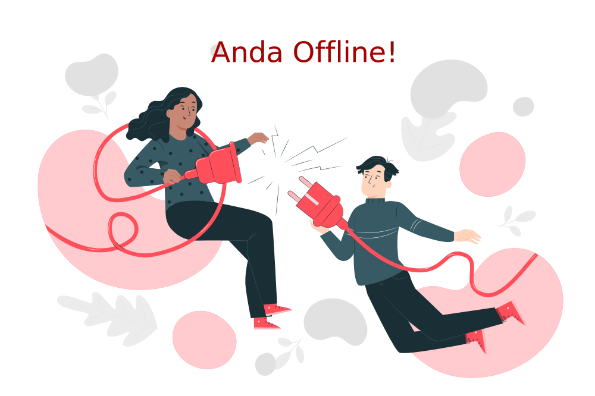

<ion-header [translucent]="true">
  <app-toolbar class="unselectable"></app-toolbar>
</ion-header>

<ion-content color="light">
  <ion-refresher slot="fixed" (ionRefresh)="refreshPage($event)" *ngIf="!isBrowser">
    <ion-refresher-content pullingIcon="arrow-down-outline" pullingText="Pull to refresh" refreshingSpinner="dots"
      refreshingText="Refreshing...">
    </ion-refresher-content>
  </ion-refresher>
  <ng-container *ngIf="isOnline">
    <div class="parent-container">
      <app-search-bar-global></app-search-bar-global>
    </div>
    <div class="spacer"></div>
    <div style="padding: 1% 1%;">
      <app-banner [doRefresh]="doRefresh"></app-banner>
    </div>
    <div>
      <app-categories [doRefresh]="doRefresh"></app-categories>
    </div>
    <div>
      <app-featured-products [doRefresh]="doRefresh"></app-featured-products>
    </div>
  </ng-container>
  <div class="img-no-data-available" [style.display]="!isOnline? '' : 'none'">
    
  </div>
  <div class="btn-container" *ngIf="!isOnline">
    <ion-button color="darkgreen" (click)="refresh()">Coba Lagi!</ion-button>
  </div>
</ion-content>

<ion-footer>
  <app-cart></app-cart>
</ion-footer>